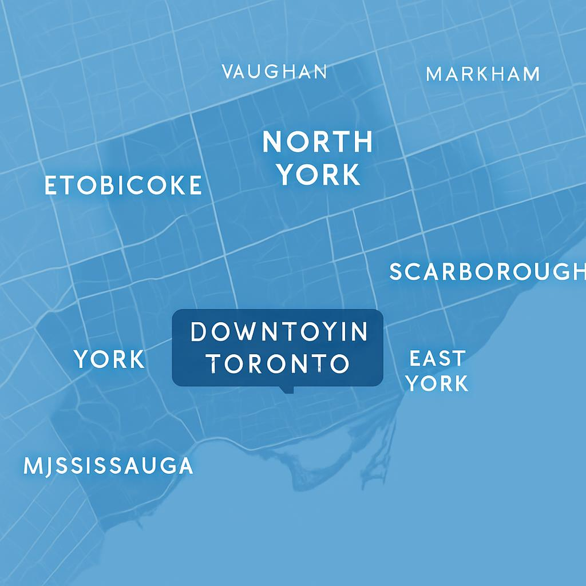

Passport Photo Toronto
Serving all neighborhoods across Toronto and the Greater Toronto Area
Passport Photo Toronto is centrally located in downtown Toronto at 63 McCaul St, making us easily accessible to residents from all neighborhoods across the city and surrounding areas. Our convenient location near OCAD University and Queen Street is just steps away from public transit, making it simple to visit us from anywhere in the Greater Toronto Area.
Whether you're coming from downtown, midtown, or the suburbs, our professional passport photo services are worth the trip. With no appointment necessary and quick service (most customers are in and out in under 10 minutes), we make getting your passport photos easy and convenient.

Our photos are guaranteed to meet all government requirements or your money back. This assurance is worth the trip from anywhere in the GTA.
Unlike general photo services, we specialize exclusively in passport and ID photos, with knowledge of requirements for all countries.
Most customers are in and out in under 10 minutes, making it a quick stop even if you're coming from outside downtown.
Our location is easily accessible by TTC, with St. Patrick and Osgoode stations nearby, making it convenient for those without cars.
If you're unable to visit our downtown studio, we also offer digital passport photo services. You can receive professionally edited, properly sized digital photos via email that meet all requirements for online applications. Visit our Digital Passport Photos page to learn more.
No matter which part of Toronto or the GTA you're coming from, our professional passport photo services are worth the trip. With guaranteed acceptance, quick service, and specialized expertise, we're Toronto's top choice for passport and ID photos.